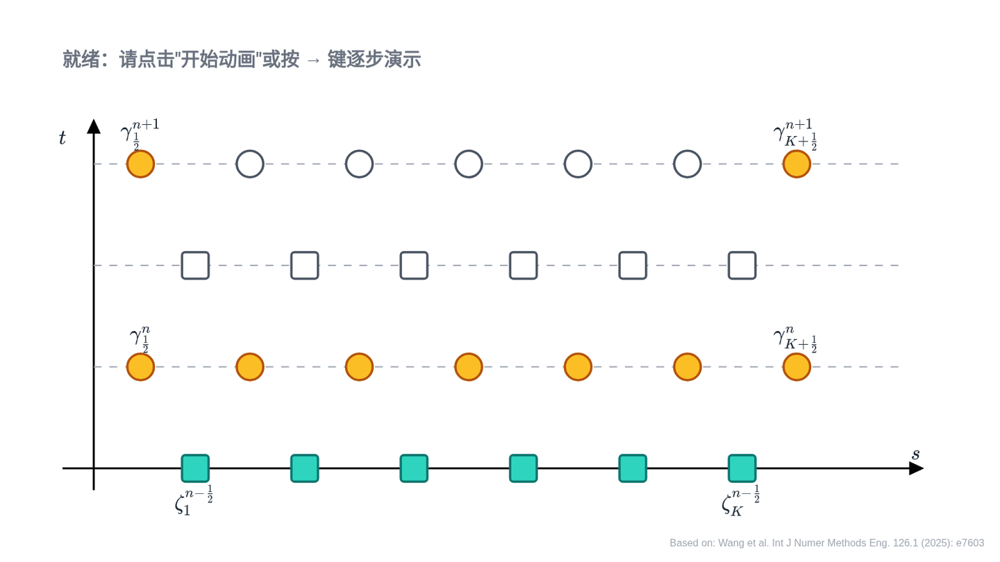

几何精确 Euler-Bernoulli 梁的 Hamel 场积分子（并行计算）
这段动画对应主页 Selected Research 中 Constraint Realization-Based Hamel Field Integrator for Geometrically Exact Euler-Bernoulli Beam Dynamics 的摄动积分子单步推进过程。动画展示的是交错网格上一个时间步如何先更新 $\zeta^{n+\frac12}$，再由相容性条件更新 $\gamma^{n+1}$。
1. 计算步骤
- 阶段 1：利用仅依赖相邻节点状态的 Hamel 方程，计算下一步 $\zeta^{n+\frac12}$。
- 这一步的局部依赖关系使各节点状态可以独立求解，因此 $\zeta$ 层能够在空间网格上并行更新。
- 阶段 2：再通过相容性条件，确定下一步 $\gamma^{n+1}$。
- 因而 $\gamma$ 层也可以按同样方式在空间网格上并行推进。
- 一个时间步完成后，交错网格上的状态整体前推一层。
2. 动画
